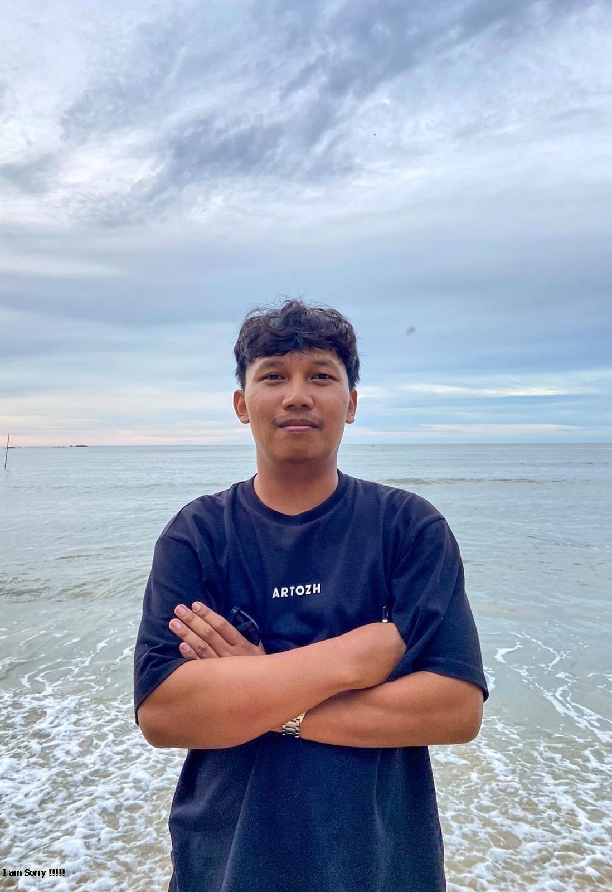

Anggit Djoko
Data Analyst
Turning raw data into actionable insights. Experienced in analyzing 76,000+ transactions across industries — from logistics & supply chain to F&B and heavy machinery.
Who I Am

Anggit Djoko Wibowo
Data Analyst dengan fokus pada analisis inventory, distribusi, dan kinerja supply chain berbasis data. Berpengalaman dalam pengendalian persediaan menggunakan WMS/IMS, penerapan FIFO–FEFO, stock opname, serta rekonsiliasi stok fisik dan sistem. Terbiasa menganalisis inbound–outbound flow, aging stock, inventory turnover, dan service level untuk meningkatkan efisiensi operasional dan menurunkan risiko loss.
Tools & Expertise
How I Work
Data Collection
Gathering data from multiple sources — databases, spreadsheets, APIs
Data Cleaning
Handling missing values, duplicates, outliers, and data type issues
Analysis
EDA, statistical analysis, segmentation, trend identification
Visualization
Interactive dashboards and charts using Tableau, Power BI, Python
Insight
Extracting meaningful patterns and actionable business insights
Recommendation
Data-driven recommendations to optimize operations and strategy
Real-World Data Analysis
Restaurant Sales & Menu Analytics
Full EDA on restaurant transactions: best/worst sellers, peak hours, payment methods, sales channels, daily trends, and customer behavior analysis.
Spare Parts Sales & Inventory Analytics
Analyzed 7,153 spare parts transactions worth Rp 17.6 Billion. Evaluated sales trends, customer concentration, fast-moving items, material group performance, and inventory optimization for KOBELCO heavy machinery.
LPG 3Kg YoY Growth Analysis 2024
Year-over-Year growth analysis: pertumbuhan +19.9% dari 2023. Analisis dampak kebijakan pemerintah terhadap segmentasi RT vs UMKM, tren profitabilitas, dan strategi distribusi adaptif.
LPG 3Kg Distribution Analysis
Annual demand analysis, customer segmentation (Rumah Tangga vs UMKM), and profit optimization for subsidized LPG distribution.
Work History
Surveyor Assistant (Freelance)
- Mengumpulkan, membersihkan, dan memvalidasi data lapangan untuk proyek penelitian internasional
- Menyusun dataset terstruktur untuk kebutuhan analisis lanjutan
- Menjaga kualitas dan konsistensi data melalui proses validasi dan dokumentasi
- Berkoordinasi dengan tim lintas budaya dalam pelaporan dan sinkronisasi data
Assistant Store Manager (Freelance)
- Menganalisis 31,000+ data transaksi LPG 3kg untuk demand analysis dan perencanaan distribusi
- Mengembangkan dashboard Tableau untuk memantau distribusi, profitabilitas, dan tren permintaan
- Memberikan rekomendasi data-driven yang meningkatkan profit bulanan hingga 19.9%
Warehouse Administration (VVIP Customer Handling)
- Menganalisis 7,000+ data transaksi spare part untuk inventory turnover dan aging stock
- Menyusun laporan inventory, stock aging, dan KPI warehouse menggunakan Excel & Tableau
- Berkontribusi dalam penurunan risiko stock-out hingga 20% melalui rekomendasi data-driven
Assistant Surveyor (Freelance)
- Menyusun laporan survei kuantitatif dan kualitatif sebagai dasar pengambilan keputusan manajemen
- Mengolah dan merangkum data lapangan menjadi insight operasional
Professional Development
Data Analyst with SQL & Python
DQLab Bootcamp
Intro to Data Analytics
RevoU
Data Analysis Fundamentals
DQLab
Electrical Engineering
Politeknik Negeri Pontianak
Let's Connect
anggitdjokow00@gmail.com
+62 813 5033 8618
GitHub
anggitdjoko
anggitdjoko
Location
Pontianak, Indonesia